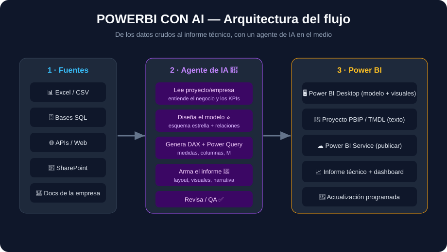
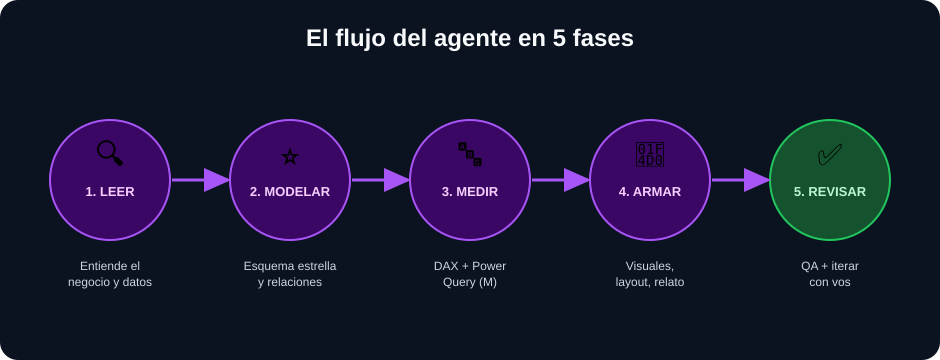
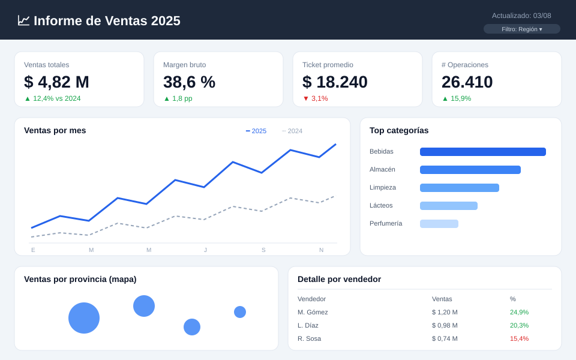

Un agente de IA que lee tu proyecto o empresa, diseña el modelo de datos, escribe las medidas DAX y arma el informe técnico en Power BI. Con guía, ejemplos y plantillas.

Leer → Modelar → Medir → Armar → Revisar. Cada fase tiene su prompt listo para usar.

Define preguntas y KPIs a partir de tu brief y tus datos.
Hechos, dimensiones y relaciones bien armadas.
Medidas y transformaciones listas para pegar.
Qué visual, dónde, y el texto técnico del informe.
Totales, coherencia, seguridad y nombres.
De cero a informe publicado, incluso si nunca usaste Power BI.
Gratis, paso a paso.
Power Query y M.
Hechos, dimensiones, PBIP/TMDL.
KPIs, YTD, ranking.
Qué gráfico y cómo.
Service y actualización.

datos/ (Obtener datos → Texto/CSV).medidas.dax (Modelado → Nueva medida).ℹ️ Las imágenes de dashboards son maquetas de diseño que muestran el resultado esperado — no capturas de tu Power BI. Cuando lo armes con tus datos, el tuyo se va a ver así.